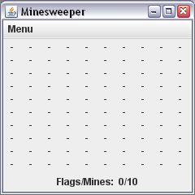
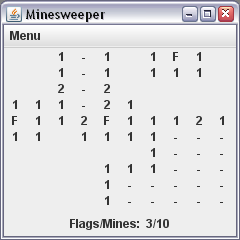
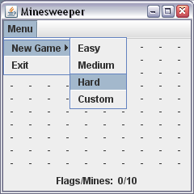
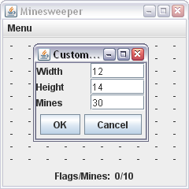
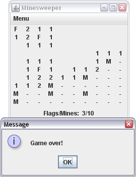
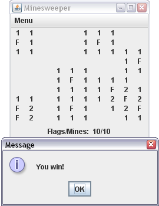

For this project, you will implement a (slightly simplified) version of the classic computer game Minesweeper. The object of the game is to clear a minefield by clicking on all the tiles without mines. If a mine is selected before this objective is complete, then the player loses. If the all non-mine tiles are identified before a mine tile is clicked, then the player wins. When a tile is selected (and it is not a mine), then the number of adjacent mines to this tile is revealed on the tile's space. If the number of adjacent tiles is 0, then the tile selected is "expanded" to a border of non-0 tiles. In the interest of brevity, a more detailed explanation of the game can be found here. If you are still confused as to how the game plays and cannot find a copy of the game (any Windows computer should have one), then ask one of the TAs. We will all have a copy of the program and can show you how the game is played.
Like the previous project, this project is a two-part project. For the first week, you will be responsible for completing the gameplay logic in the associated classes provided in the skeleton code. For the second week, you will be responsible for building a GUI which reasonably resembles the example GUI below. Note that the amount of code to be written for this project may be quite large compared to previous projects (as GUI code is inevitably long). However, none of the code is extremely complex if you have a firm understanding of the structure and organization of the code. Additionally, since GUI code tends to be arduously long at times, we strongly recommend you start early on the GUI if you complete the milestone portion of the project early.
To get you started, here's the skeleton code we've provided you.
The minesweeper game logic is encapsulated in 3 primary classes: Minesweeper, MinesweeperBoard, and Tile. Minesweeper should be where the majority of the interfacing takes place as it has control over the board and thus all the tiles. MinesweeperBoard simply manages the board's information and contains a 2D array of tiles, each represented by the Tile class. These classes have been partially completed for you, and it is your job to complete the missing functionality. However, before you code anything, you should take some time to understand the already provided functionality for you, as these functions will help you understand what is missing in the classes. All missing code is marked with TODOs placed throughout the classes. If you wish to use the design we have provided, then completing these TODOs should be all the gameplay logic (save any interaction with the GUI) that you need to complete. Note that even for the milestone, you should think about how these classes may be affected by the GUI you need to build. That means that some of the below methods may need to be changed, though through careful planning the scale of the changes should not be significant.
You may modify the classes however you'd like (even completely scrapping them and starting from scratch if you'd like). If you find that methods are missing, you may add more methods. If you need more or less arguments to some methods, you may change the method signatures. Any change to these methods for the final submission which do not explicitly violate the requirements of the project are fair game since the program will ultimately be run through the GUI.
Here's a summary of the methods and constructors with TODOs:
Minesweeper.java public Minesweeper(final int width, final int height, final int numMines) throws TooManyMinesException
This constructor creates a new Minesweeper game with the given width, height, and number of mines. If the number of mines exceeds the total number of tiles on the game board (as defined by width*height), then a TooManyMinesException should be thrown. Observe that each of the arguments to this constructor has the final keyword as a modifier. Adding the final keyword indicates that the values of width, height, and numMines are known to stay constant in the constructor (it doesn't make too much sense to change their values anyways). In general, adding the final keyword to known values which will not be modified (for class variables, method arguments, and locally declared variables) is a good practice to get into, and you'll see this notation used throughout the code in this project.
public void toggleFlag(final int i, final int j)
This method is called to place a flag on tile (i, j) on the game board when the player right clicks on an unvisited tile (if the tile has already been visited then do nothing). The flag, marked as a 'F' for our program, acts as a marker to remind the user that a mine is present. Note that in the classic minesweeper toggling a flag changes it to a question mark before it returns to a normal tile, but you do not have to implement this functionality.
public void visitTile(final int i, final int j)
This method is called to visit tile (i, j) on the game board when the player left clicks on an unvisited tile (again, if the tile has already been visited then do nothing). Depending on what the tile holds (a mine, 0 adjacent mines, or 1-8 adjacent mines), different things should be done. If the tile is a mine, then the game is over. If there are 1-8 adjacent mines, then the tile is revealed with the appropriate number. If there are 0 adjacent mines, this method should expand the visit with a call to expandVisit which has already been written for you.
public boolean victory()
This method should be called after a tile has been visited to check if the game has been won. If the game has been won, return true, otherwise return false.
MinesweeperBoard.javapublic MinesweeperBoard(final int width, final int height, final int numMines) throws TooManyMinesException
The constructor for the board creates a board of size width x height and places numMines mines in random locations spread throughout the game board. If numMines exceeds the number of tiles on the game board, then a TooManyMinesException should be thrown. Once you allocoate space for your game board tiles, you can call the setMines(...) method in order to place the given number of mines on random tiles on the game board.
Tile.javapublic void setVisited(final boolean visited)
This method sets this tile to be visited. The visitTile method in class Minesweeper should eventually call this method on the appropriate tile if necessary.
public void setFlagged(final boolean flagged)
This method sets this tile to be flagged (or unflagged, depending on the argument). The toggleFlag method in class Minesweeper should eventually call this method on the appropriate tile if necessary.
For the second half of the project, you will be responsible for building the GUI to play minesweeper using your game logic you completed for the milestone. To begin, here's a few pictures of what our GUI looks like at the beginning of the easy setting game and with some tiles having been visited:

For a new game, all the tiles have not been checked as marked by the '-'s.

After a couple turns, each number represents the number of mines adjacent to the tile, blank tiles represent 0-adjacent mine tiles, and 'F' is a flagged tile.
As previously stated, your GUI should look reasonably similar in spirit, though it does not have to be an identical replica. You should have uniformly sized tiles on the board (set the size of each tile to TILE_SIZE x TILE_SIZE, a constant in Tile.java). You should also have a label underneath the board to indicate how many flags have been placed (by right-clicking) as well as the total number of mines on the game board. The menu provides options for the type of game to play (you may default the initial game to load to be of the easy type), and should look like this:

The menu should have the option to choose between one of four different types of games and an option to exit the program.
Each of the dimensions of the game board and the number of mines is defined as constants in Minesweeper.java. For the custom game, the player is allowed to specify his own game charactersistics. To do this, when a custom game is selected, a separate window should pop up where the player can input his own game parameters. If a game parameter is input wrong (e.g., since they are all numbers, an input String of "xyz" is invalid), the player should be notified so and asked to correct the input. Our custom game pop-up menu looks like the following:

The custom game menu asks for the width, height, and number of mines for the game. The user has the option to accept the parameters or to cancel them.
When the game is over by defeat (i.e., a mine tile has been visited), all unflagged mines should be revealed (by an 'M'), an appropriate message should pop up, and all the tiles should be disabled (e.g., the game should no longer be able to be played). This looks like the following:

A mine has been visited! Game over.
When the game is over by victory (i.e., all non-mine tiles have been visited - there is no requirement on setting flags on the mines), then an appropriate message should pop up and all the tiles should be disabled. This looks like the following:

All non-mine tiles have been visited. Victory!
The GUI is fairly complex, however it can be built with only a handful of GUI related classes. To get you started, each tile is represented by a JLabel (they look better adjacent to each other than JButtons). Note that JLabels may have listeners added to them like many other GUI classes. The pop-up messages are JOptionPane dialogs while the custom game pop-up is a separate JFrame. Since the gameplay interface requires both right and left clicking, you'll have to explore using MouseListeners to achieve this goal. As for the layout of the board and various labels, you'll have to determine what layouts work best yourself.
In the end, your GUI (and thus final program) should be able to run by the command:
>> java MinesweeperGUI